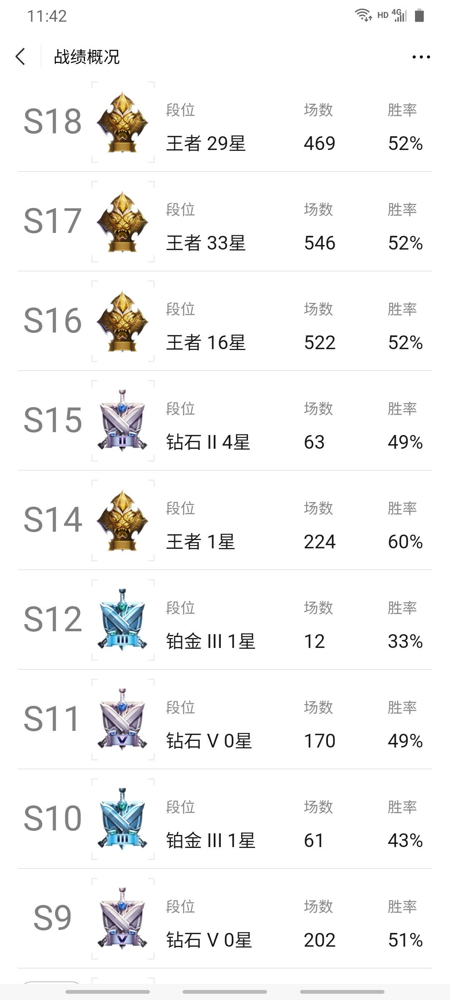

曾经非常鄙视别人玩游戏，认为一个破游戏有什么好玩的，简直就是浪费生命。直到有一天自己变成可曾经最讨厌的那种人。
就是闲的，因为没有事情做，就想着反正有大把的时间，玩把游戏放松一下，但是常常一开始就很难结束。玩游戏很容易上瘾，各个游戏设计者在设计游戏的时候，就是想尽一切办法留住玩家，会提供各种各样的小福利留住玩家，从而长期获利。玩游戏和追剧的人有点类似，没开始的时候不想，一旦开始了就想着搞完了。
玩游戏瘾很大，可以说是朝思暮想、废寝忘食。很多次玩过游戏觉得太浪费时间，把游戏删了，可是当下一次有时间的时候，却又开始下载游戏玩，可能这样周而复始很多次，最终也很难真正的戒掉玩游戏的瘾。
《王者荣耀》浪费了了我很多的周末的闲暇时间，这是玩通关《魂斗罗》之后浪费我时间最多的游戏。